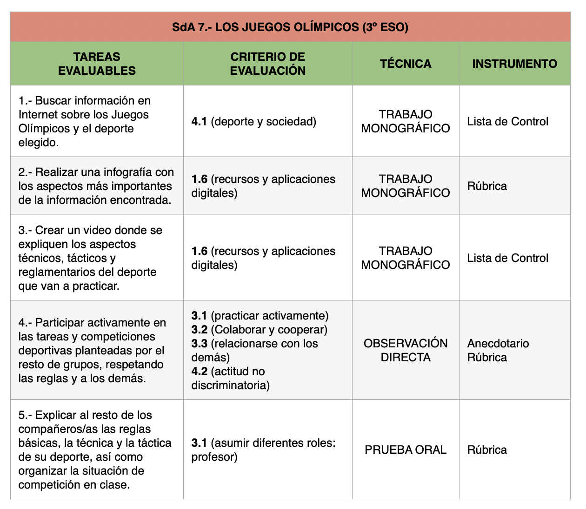
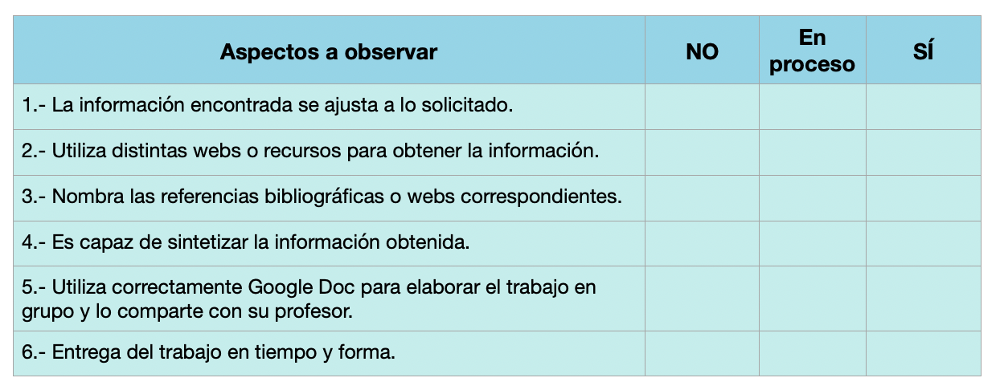
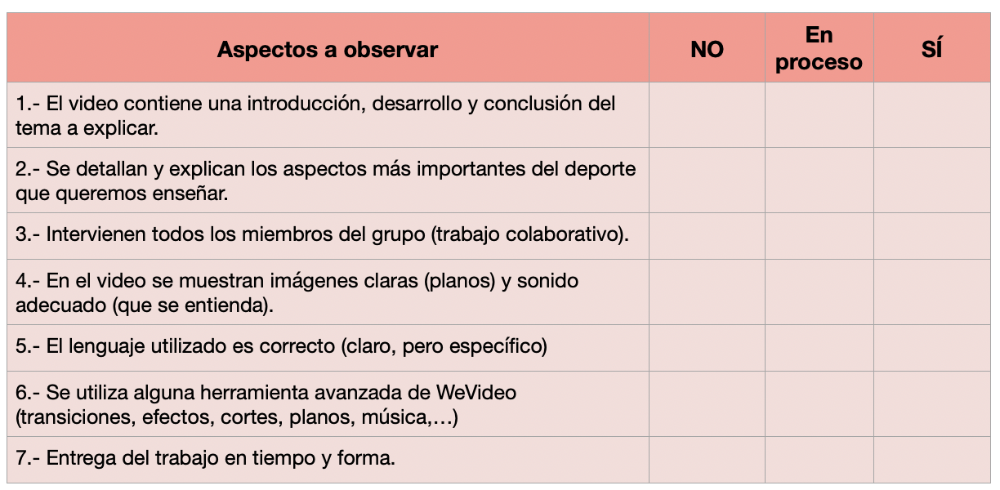
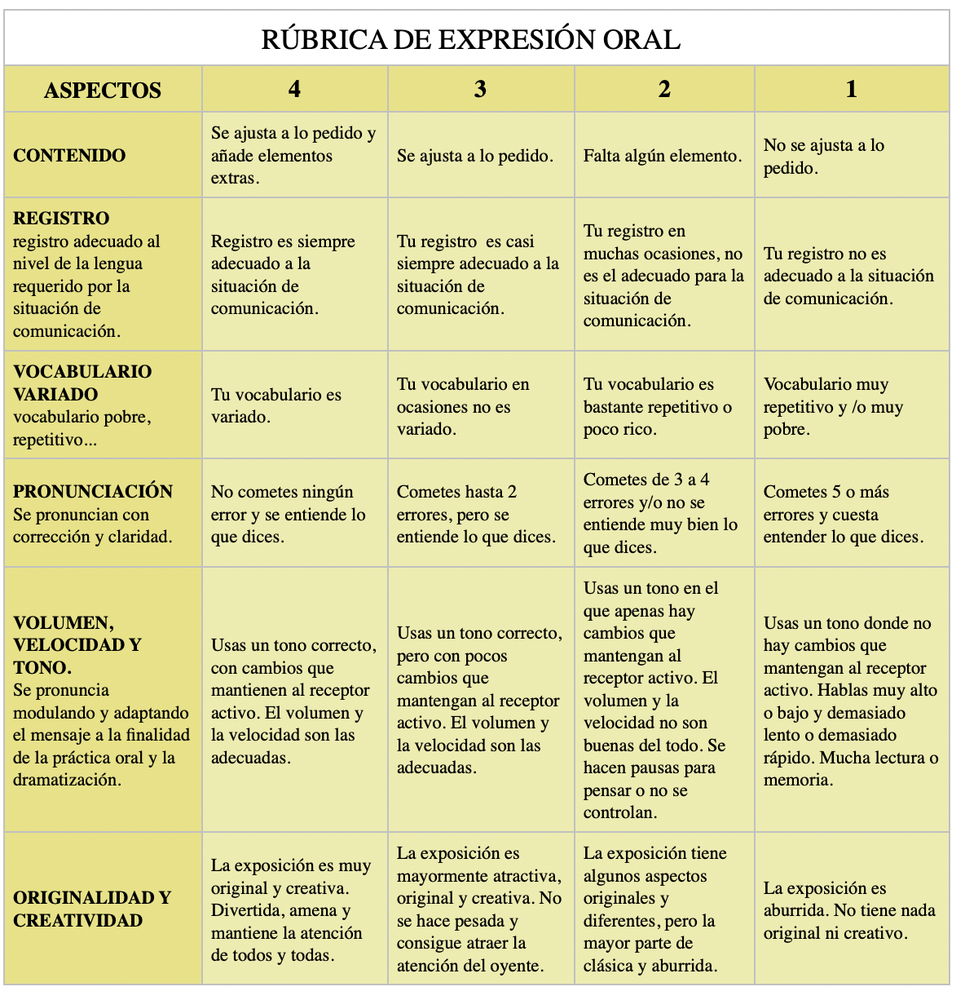

¿Cómo vamos a evaluar?
Como podemos observar en la siguiente tabla, los principales instrumentos que vamos a utilizar para el proceso de evaluación de criterios en esta SdA, son las listas de control, las rúbricas y el anecdotario, que pasaremos a desarrollar a continuación:

. Instrumentos de Evaluación SdA 7 (CC BY-NC-SA)Tarea 1
Para la tarea 1 (búsqueda de información) utilizaremos la siguiente lista de control, con la que pretendemos asegurarnos de que el proceso de búsqueda de información cumple con unas ciertas garantías de calidad y seguridad. También nos servirá para evaluar la calidad del trabajo colaborativo entre los miembros del grupo. La información obtenida nos permitirá aportar feedback sobre el proceso del trabajo y mejorar futuras entregas.

Tarea 2
Para la tarea 2 (creación de infografía) utilizaremos la siguiente rúbrica, sacada del Centro Nacional de Desarrollo Curricular en Sistemas No Propietarios, que nos ha parecido muy completa y acorde a lo que necesitamos:
Tarea 3
Para la tarea 3 (creación de video) utilizaremos una lista de control similar a las anteriores. En ella se evaluarán los aspectos más importantes del proceso creativo, asegurándonos así de que el alumnado se esmera en crear un material claro, conciso, efectivo y creativo.

Tarea 4
Esta tarea se evaluará, principalmente, a través de un ANECDOTARIO. Es decir, el profesor anotará todo aquello que observe y que considere interesante a cerca de:
- Tu nivel de participación y esfuerzo.
- Tu nivel de desarrollo motriz.
- Tu conducta en clase (respeto de normas y a los demás).
- Asistencia, puntualidad, implicación, interés.
- Ayuda a los demás y colaboración en clase.
Tarea 5
De la misma forma, para la tarea 5 (exposición oral) utilizaremos la siguiente rúbrica:

Cuestionario final de reflexión
Ya estamos finalizando y, ahora, resulta muy interesante reflexionar sobre nuestra labor (del profesor y del alumnado), la conveniencia o no del contenido trabajado, propuestas de mejora, etc. Esto nos servirá para evaluar tanto la planificación, como el proceso de enseñanzaa-prendizéaje, y nos ayudará a mejorar en el futuro. Os pedimos que rellenéis el cuestionario final, con la mayor sinceridad posible. Gracias de antemano.